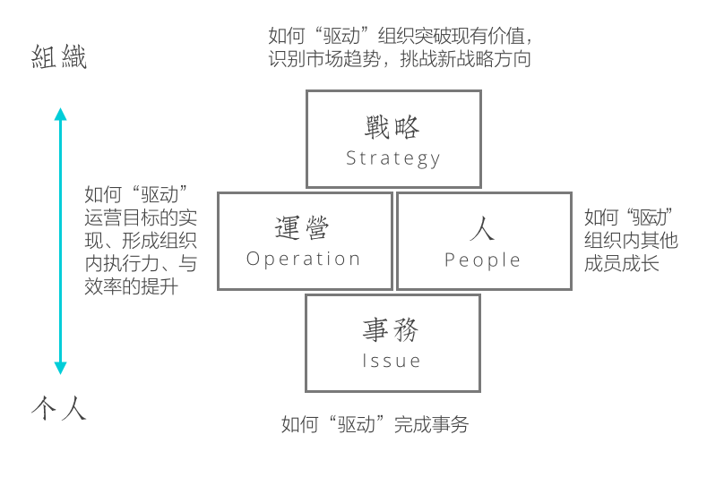
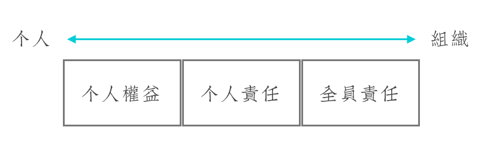
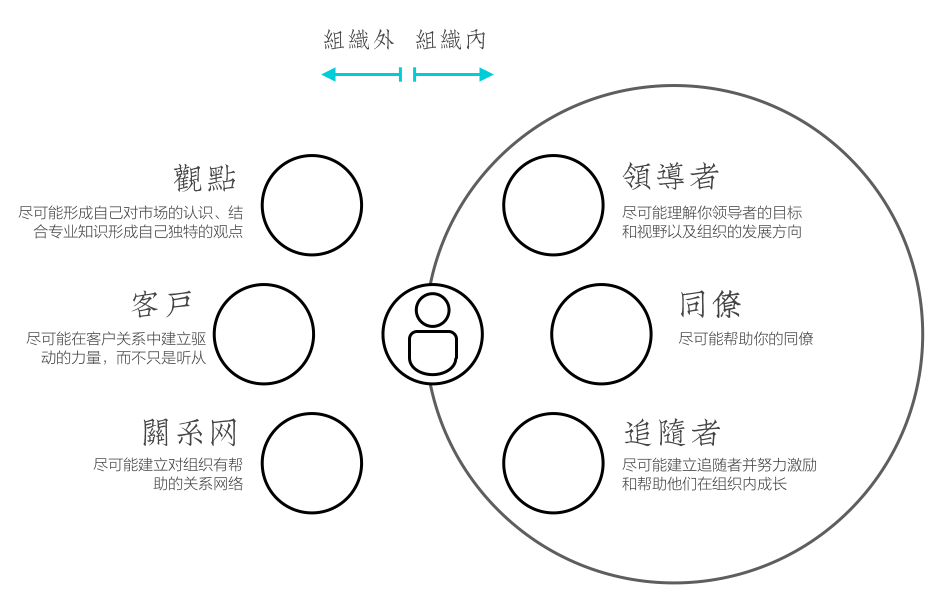
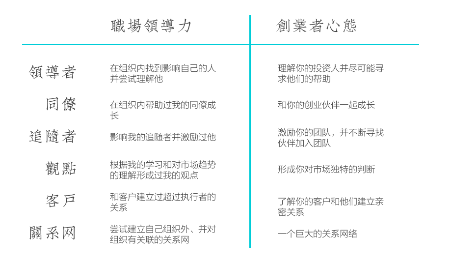

三月的第三周我来到新德里参加每个季度一次的领导力培训，这个培训的目的是将包括南非、乌干达、中国、印度、巴西、厄瓜多尔在内的新兴市场国家（Emerging Economies）新一代的领导者集中在一起，在一周的时间里学习领导力和影响力、讨论业务、理解各个新兴市场国家的文化、历史、政治和经济。
有趣的是，当我和其他的十多位同事环坐在一起的时候，突然发现，在座的各位要么拥有团队、要么管理大客户关系、要么是分公司的管理者，只有我一个，没有团队、没有客户、没有项目、没有职位。最自然的反应是：我为什么在这里培养领导力，我要将领导力用在哪里？
另一方面，过去的几年我一直接触许多创业者，同时自己也在做一个内部创业的项目，对创业又有了新的理解。
这样有趣的差异和变化使我重新思考领导力到底是什么？同时职场领导力和创业者心态又有什么样异曲同工之妙。
解码领导力
麦肯锡在2014年调查了全世界81个组织中189,000位受访者对领导力行为的理解（参考），最后四种行为被认为是最具备领导力的行为方式，它们分别是：
- 有效地解决问题：无论事务大小，在识别、分析、策划、组织、决策每个环节展示出解决问题高效的能力；
- 结果导向的高效运营：极具结果导向、专注于效率的提升、超强的执行力、和对优先级有准确判断；
- 理解和支持他人：建立与同事间的信任、对其他同事保持好奇并真心帮助其克服挑战；
- 跳出固有思维的限制：总在市场趋势中识别出对组织有影响的部分，帮助组织不断挑战和获得新的价值。
这四项领导力行为真正体现的是“个人在不同程度（从个人到组织）上驱动组织”：

- 如何“驱动”完成事务；
- 如何“驱动”运营目标的实现、形成组织内执行力、与效率的提升；
- 如何“驱动”组织内其他成员成长；
- 如何“驱动”组织突破现有价值，识别市场趋势，挑战新战略方向。
领导力的偏见
重新思考领导力行为的特征之后，我们对于领导力最常见的偏见也展现出来，这些偏见使得我们错误地理解了个人与组织的关系，也大大限制了个人的成长。
领导力是领导的能力
最常见的偏见是把领导力当成领导特有的能力，我们对领导者有天生的刻板印象，他们一定是富有激情的、外向的、无所畏惧的、老谋深算的、精力充沛的，这样的印象使得我们将领导力和个人性格划上等号，当自己的性格和领导者性格不同时，一旦谈到领导力建设的时候，个人就会有抵触。
事实上，仔细思考领导力的行为模式，传统领导者的性格也许会帮助某些行为获得更好的结果，例如目标导向、更好的抗压能力、连接人的能力等，但这并不代表这些行为模式只有领导者才能够完成，而只是事情规模的区别。
领导力就是做管理
另一个关于领导力的偏见是把领导力等同于管理，这样的偏见使得很多人在以下情况下拒绝思考领导力培养：
- 认为自己不适合做管理而不做管理
- 认为自己还没有足够能力做管理
事实上，领导力的行为中也许有管理（例如运营和人）的部分，但并不是全部，领导力和企业管理意义上的管理本身是两个概念。
领导力由岗位职责决定
对领导力另外一种误解是把它当成一种职位赋予的责任，把不同程度上的行为模式当初不同层级上的职责责任，举例而言，当我在专心处理职位赋予我的事务时，我便不必要思考我在运营、人、和战略中可以承担的责任。
事实上，以ThoughtWorks为例，目前大部分有能力影响整个企业运行的领导者，都曾经在获得当前岗位职责之前就已经承担了当前岗位要求的责任，并不否认岗位可以对领导力有倍增的效果，但是岗位并不是领导力的决定因素。
反思领导力培养
对于领导力的偏见是广泛存在的，这点不单单存在于员工中，管理者也存在对领导力认识的不足，对于领导力培养，有如下反思：
过度依赖性格或价值观认同
高领导力者往往带着更多让人追随的特质，即性格吸引，这种吸引使得他们更多关注那些能够被他们性格吸引的人，这样的人被认为是价值观符合的。在一个组织成长的最初，这种性格追随是迅速建立领导力的最好方式，但当组织慢慢庞大之后，这种“江湖气”的方式可能产生问题：
- 机会被少数人所占有；
- 被培养者不断模仿领导者导致与其他同伴的隔阂；
- 领导者离开后造成的“失势”与“失落”；
- 领导者失去发现其他领导力潜力的耐心。
- 形成铁板一块的小团体；
忽视领导力的多元化
如果我们的偏见是领导力培养是为了未来管理，管理能力就被不自觉地强调在领导力的培养中被拔高，在ThoughtWorks的情境中，我们最常讲的便是“撬动模型（Leverage）”，即你能够带动其他多少人。这在现有业务模式很长时间内是工作的，我们确实需要从项目、客户、分公司、实践不同级别上的管理者，但是一个成长型组织的特点是：
- 越大的组织越需要不同特点的人才；
- 越成长的组织越需要针对未来市场的人才。
因此单单基于现有的业务模型建立领导力培养体系，既满足不了越来越大组织规模的要求，也满足不了越来越新业务模式的要求。
EELD领导力培养计划中就特别重视了这一点，来自7个国家的学员各自来自不同的背景，培训的内容也涉及财务、运营、影响力、销售、战略、客户等等多个方面。
简单化领导力培养的目标
当我们武断地认为领导力培养就是未来接班人，虽然最终的结果也许是产生了新一代的领导者团体、业务得以延续精进，但领导力培养的真正目标却被忽略。
领导力培养的真正目标是“全员责任”，是尽可能地让组织内的所有人都在自己能力范围允许的情况下“驱动组织的成长”。换言之，领导者培养领导力的意义是期待组织内的大部分人都能够从追求个人权益、到追求个人责任、最终达成全员责任，而不仅仅是培养出下一代的领导集体。

自我领导力培养的方法
和大部分的EELD同学不同，我并不在任何传统意义的领导岗位上，离开中国之后，我失去了亲手建立的团队、客户关系、管理团队的支持，那么在这种环境里该如何继续保持成长。这里我分享自我成长的方法，首先是三大原则：
- 培养领导力是培养非职权影响力；
- 非职权影响力是多元化的，尽一切手段完整你的非职权影响力；
- 非职权影响力是相互关联，尽一切手段关联你不同区间的非职权影响力。
以下是我用于自我实践的培养体系：

这里分作“组织内”和“组织外”两个部分，在组织内你需要分别建立与领导者、同僚、以及追随者的影响力；在组织外你则需要形成对市场（形成观点）、客户、以及社区（关系网）的影响。
领导者
理解你的领导者是培养自我领导力的第一步，这里的领导者不一定是你职位上的领导者，他可以是你在组织里钦佩的人、对你有影响的人、甚至左右组织发展方向的人。你需要做的事情，是尽可能去理解他们的处境，他们的目标是什么、视野在哪里，这样做的目的并不是讨好，而是“共情（Empathy）”，默契的关系让你获得更多的机会，超越职位限制所带来的机会。
同僚
真心地帮助自己的同僚是不断积累“社会资本（Social Captial）”的过程，目的并不是期待未来他们能够对你有帮助，而是任何一个协作过程都是一次影响力的加分，而帮助也是交换价值和亲近关系的建立。
追随者
你一定有在组织里你能够影响的人，他们是监督你进步最合适的人选，尽可能的启发和帮助他们，无论你们有没有职权上的关系。
观点
无论是什么，一定形成一样自己的观点，它会帮助你在对内对外关系中提升你的影响力，这也是为什么需要持续保持学习和输出观点（更重要地）。
客户
你也许没有办法获得最高基本的客户关系，但在你能够接触到的级别里和客户成为相互信任的关系，帮助他们成长，并维持这个关系。
关系网
外部关系网是必不可少的，也许你处于一个新的环境，外部的关系网其实是让你不那么孤独的好方式，这些朋友既可以是生活中的好伙伴，也可以是未来事业的帮手。
更加重要的是，这里提到的六个方面，你需要同时去做！因为领导力背后的非职权影响力是多元化的（因为没有职权限定），更有趣的是，最好的结果是在各个区间找到关联关系，比如介绍一个你的追随者给你关系网中的人、再比如把你的观点回馈到社区等等。一切的一切，都是让你在没有职权的情况下变得更加强壮，同时并不放弃领导力的自我修炼。
如果你想培养自己的领导力（或影响力），不如问自己七个问题，在过去的6个月里：
- 我是否在组织内找到影响自己的人并尝试理解他？
- 我是否帮助过我的同僚成长？
- 我是否影响过其他人并激励过他？
- 我是否有根据我的学习和对市场趋势的理解形成过我的观点？
- 我是否和客户建立过超过执行者的关系？
- 我是否尝试建立自己组织外、并对组织有关联的关系网？
- 我是否尝试把以上6点联系在一起？
如果每一项你都能找到一点证据，那么你一定在努力培养自己的领导力，你也一定把你的职场生涯构建得不错。
职场生涯的创业者心态
我突然明白这就是创业者心态，作为一个创业者你需要：
- 理解你的投资人并尽可能寻求他们的帮助；
- 和你的创业伙伴一起成长；
- 激励你的团队，并不断寻找伙伴加入团队；
- 你要形成你对市场独特的判断；
- 你需要了解你的客户和他们建立亲密关系；
- 你需要一个巨大的关系网络；
- 你需要关联以上这一切。
以下就是职场领导力和创业者心态的关联关系：

无论你的未来能不能成为一个领导者，就像你未来能不能创业成功，你的职场生涯都是逐渐强壮的过程，这是领导力自我培养的秘诀，也是职场生涯的创业者心态。
写在最后
有很多很多人邀请我创业，我一直说我不会选择创业，但我会愿意帮助更多的创业者，直到我接手一个内部创业项目，才深刻地理解到为什么人们那么钟情于创业，对于未知的好奇，和未来那个更好的自己，都是你我创业的根源。
同时在我看来，对于一个创业者而言，上面提到的7点，都是你需要毫无保留地做到的，这是一个创业者最基础的素质；同时对于一个愿意在职场上努力成长的人，这里所提到的领导力也是成长的基础。
那么，创业愉快！